📑 文章目录（16 节）
本文将全面介绍 KONAMI 推出的 IIDX（beatmania IIDX / 弐寺）官方专控“入门款（Entry Model）”：它是一款怎样的控制器、上手后令人在意的按键卡键问题及其修复改造步骤，以及在 INFINITAS 中无反应时的排查方法。
笔者入手入门款实测了一番之后，发现按键卡键问题实在太严重了，于是动手做了经典的老牌防卡键改造，并将完整步骤附照片记录在本文中。
- 入门款是官方同时支持 INFINITAS（PC）与 ULTIMATE MOBILE（手机端）的价格最低的官方专控（18,800 日元）
- 优点是按键声音相对安静且本体轻便，最大的短板则是容易卡键
- 卡键问题可以通过用 1mm 橡胶片和厚纸板垫高的改造来解决，所需材料在五金家居店就能买齐
- 拆解与改造需自行承担风险，可能导致无法享受官方保修服务
什么是入门款（Entry Model）？
入门款（Entry Model）是 KONAMI 为 INFINITAS 与 ULTIMATE MOBILE 推出的官方专用控制器。截至 2026 年 10 月，KONAMI 官方商城（Konami Style）正在再贩中，售价为18,800 日元（含税）。
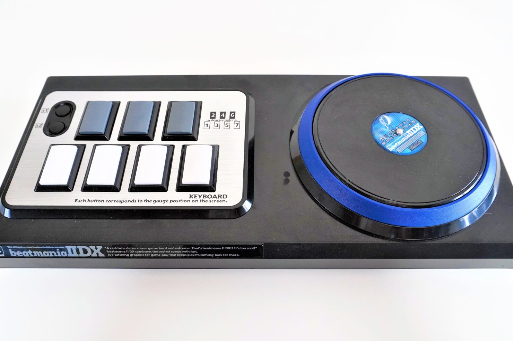
| 价格 | 18,800 日元（含税） |
|---|---|
| 按键配置 | 7 个键盘按键、1 个转盘（皿）、2 个功能键 |
| 尺寸 | 宽 46.3cm × 深 21.6cm × 高 7.6cm |
| 重量 | 1.6kg（不含 USB 线等配件） |
| 连接方式 | PC 端为 USB 有线连接（线长 2m），手机端为蓝牙连接（需装电池） |
| 支持平台 | beatmania IIDX INFINITAS、beatmania IIDX ULTIMATE MOBILE |
它的内部结构与早年的 PS2 版专控几乎一模一样。键盘并非采用街机那样的微动开关，而是通过主板上的导电橡胶触点来触发输入。不过在细节上有所改动，比如按键支脚比 PS2 版更长了一些。
关于与其他手台的对比，以及目前能买到的各款控制器汇总，请参考这篇文章。
关于手机版 ULTIMATE MOBILE 的游玩内容与包月方案，详见这篇文章。
入门款上手评测
- 按键敲击声相对安静
- 比街机规格的手台便宜
- 支持蓝牙，也能用于手机版
- 非常容易出现卡键现象
- 按压手感与街机差距很大
- 机身偏轻，搓盘时本体容易移位打滑
声音安静，而且比街机规格的手台便宜得多，是它最大的卖点。很适合住在公寓楼里、想先在家低门槛入坑 IIDX（弐寺）的玩家。
但另一方面，笔者买到的这台卡键严重到简直没法正常游玩。虽然这可能和按键习惯以及个体品控差异有关，虽说大家都讲它比 PS2 版专控更不容易卡键了，但只要按到按键边缘依然会卡死。我现在已经不再用它了。
如果你追求与街机一致的按键手感，那么 Phoenixwan（PHOENIXWAN）这类接近街机规格的手台会是更好的候选。
什么是按键卡键（ハマり）？
所谓卡键，是指按压按键边缘位置时，按键倾斜下沉并被外壳卡住，导致无法回弹或无法触发判定的现象。这是从 PS2 版专控时代就遗留下来的老毛病，采用相同结构的入门款也同样会出现。
按键下沉得越深就越容易卡住，因此垫高按键底部、缩短键程（下沉深度）便是流传已久的经典解决方法。
防卡键改造所需工具与材料
※拆解与改造风险自负。如因此导致无法复原或损坏故障，本站概不负责。
- 剪刀或美工刀
- 十字螺丝刀
- 空纸巾盒（用作厚纸板）
- 1mm 厚的橡胶片
- 内六角扳手（2mm）或梅花螺丝刀
1mm 厚橡胶片（带背胶的更省事）
用于垫高键盘主板。哪怕买 10cm×10cm 的一块也绰绰有余。稍大一点的五金家居店通常都有卖，也可以用橡皮擦等材料替代。如果买的是不带背胶的橡胶片，记得再准备一卷双面胶。
内六角扳手（2mm）或梅花螺丝刀
由于入门款内部使用了名为“梅花螺丝（Torx 螺丝）”的特殊螺丝，拆开它需要用到2mm 内六角扳手或梅花螺丝刀。内六角扳手在百元店等地方也能买到，找一把 2mm 规格的即可。
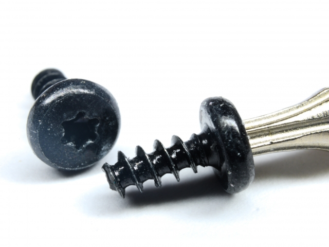
防卡键改造步骤（约 30 分钟）
1. 拆解本体
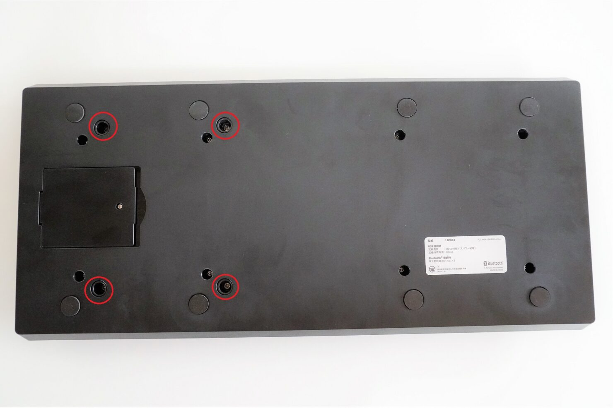
用十字螺丝刀拧下红圈标注的螺丝。
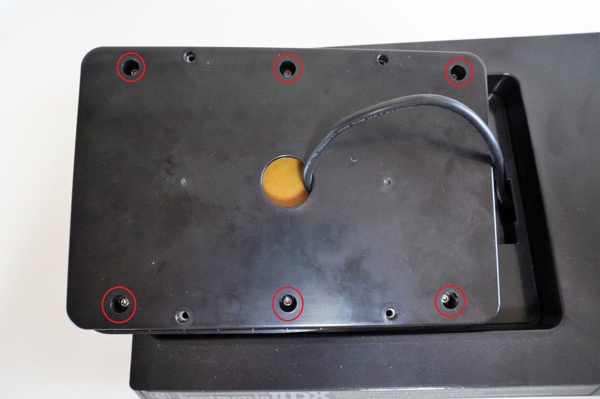
键盘模块背面由 6 颗梅花螺丝固定。用内六角扳手或梅花螺丝刀将它们全部拧下来。
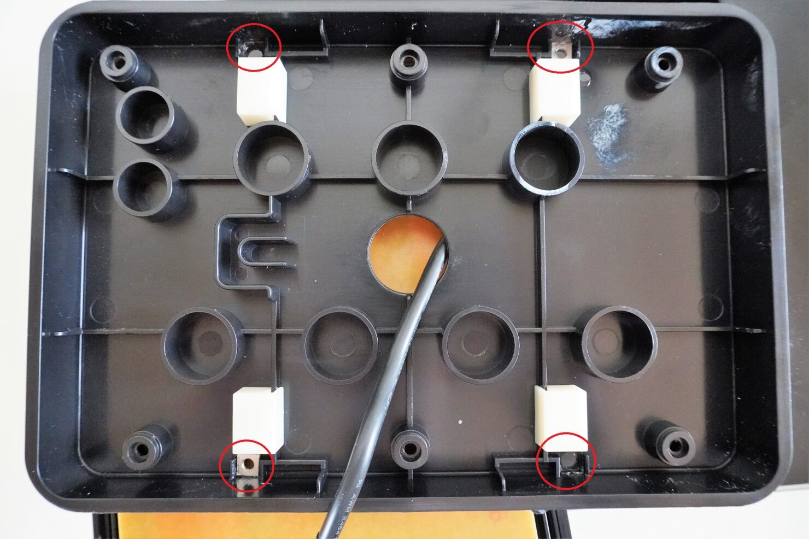
打开后盖后，红圈标注处的螺母应该会掉出来。之后装回去的时候会非常碍事，建议顺手用胶水之类把它粘住固定。
电路板由 2 颗螺丝固定。内部构造和当年的 PS2 版专控如出一辙。
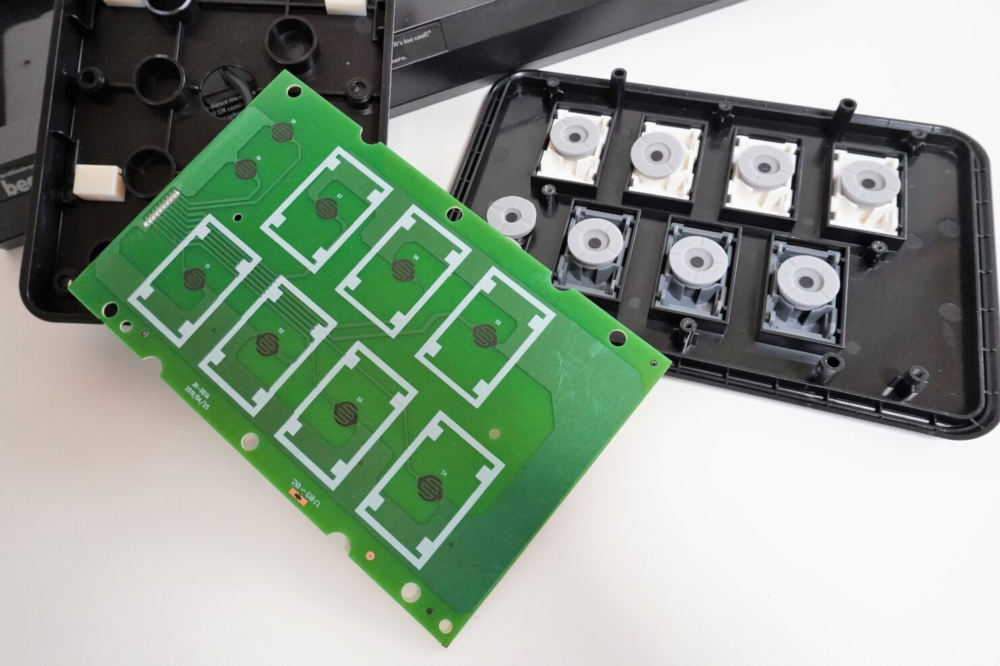
2. 准备垫片材料
首先把橡胶片剪成大约 5mm×5mm 的小方块。每个按键需要贴 4 片，所以 SP 需要准备 28 片，DP 需要准备 56 片。
接着，把空纸巾盒剪成直径约 15mm 的圆形纸片。直接用 CD 或 DVD 光盘中间的小孔描边取模，大小刚刚好。
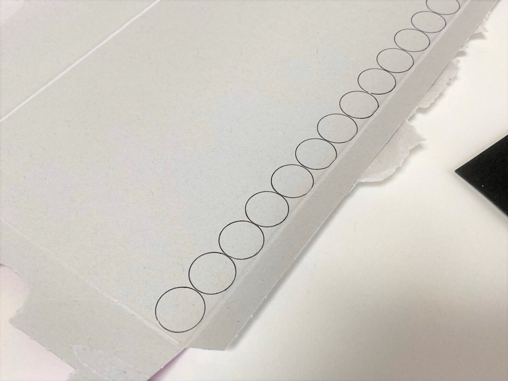
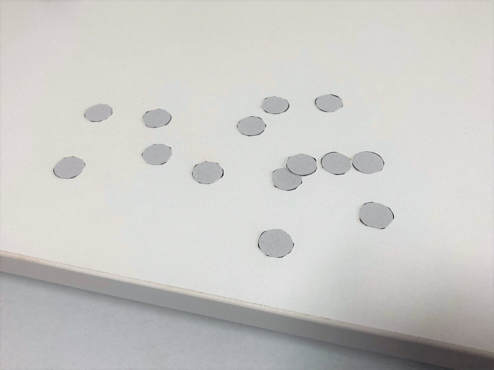
圆形厚纸板每个按键只需 1 片，因此 SP 准备 7 片、DP 准备 14 片即可。
3. 将橡胶片贴到电路板上
参照下图，将剪好的橡胶片一片一片贴到电路板上。
早年的 PS2 版专控需要叠贴 2 层（垫高 2mm）。但入门款的按键支脚比 PS2 版长了约 1mm，因此只贴 1 层就足够了（如果贴 2 层会导致按键完全按不下去）。
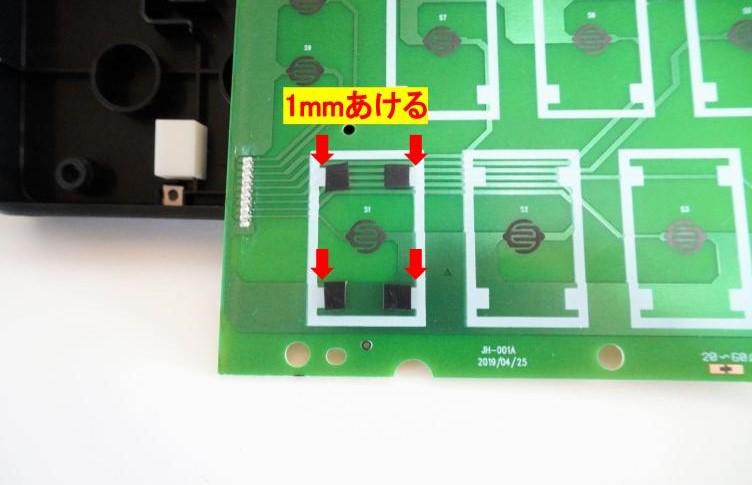
需要注意的是，请贴在白线往内侧缩进大约 1mm 的位置，以免装回固定电路板时与塑料外壳部分发生碰撞顶住。
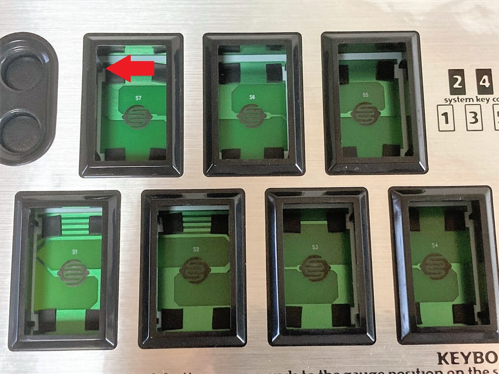
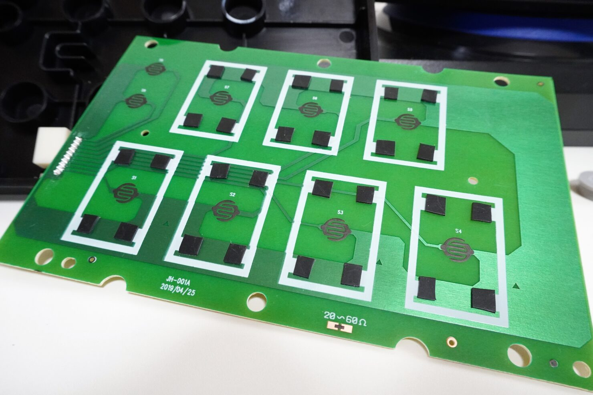
4. 将圆形厚纸板夹在按键与导电胶之间
剪好的圆形厚纸板像下面照片这样放进去即可。
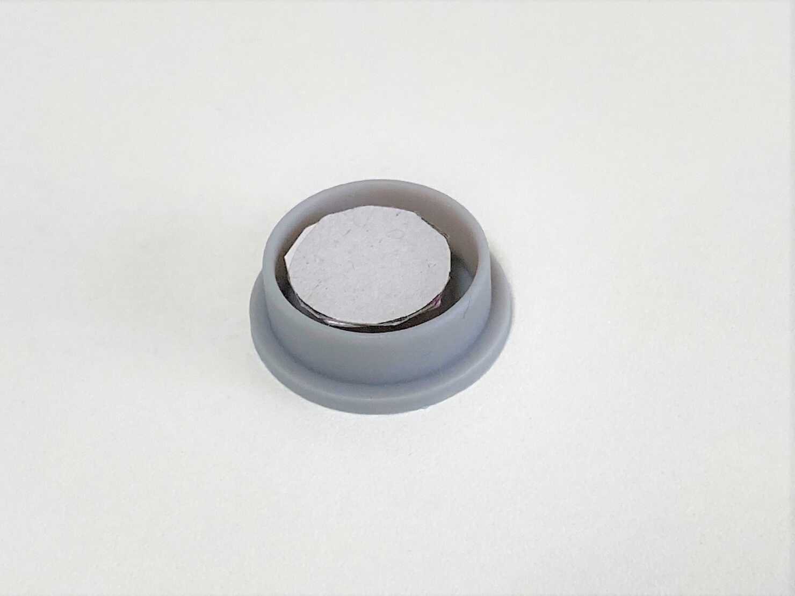
垫 2 片的话会觉得键程浅得过头，所以放 1 片就够了。给所有按键都放好之后，接下来只要按原样组装回去即可。
5. 组装复原时的注意事项
入门款与 PS2 版专控不同，它的排线是直接连在电路板上的。
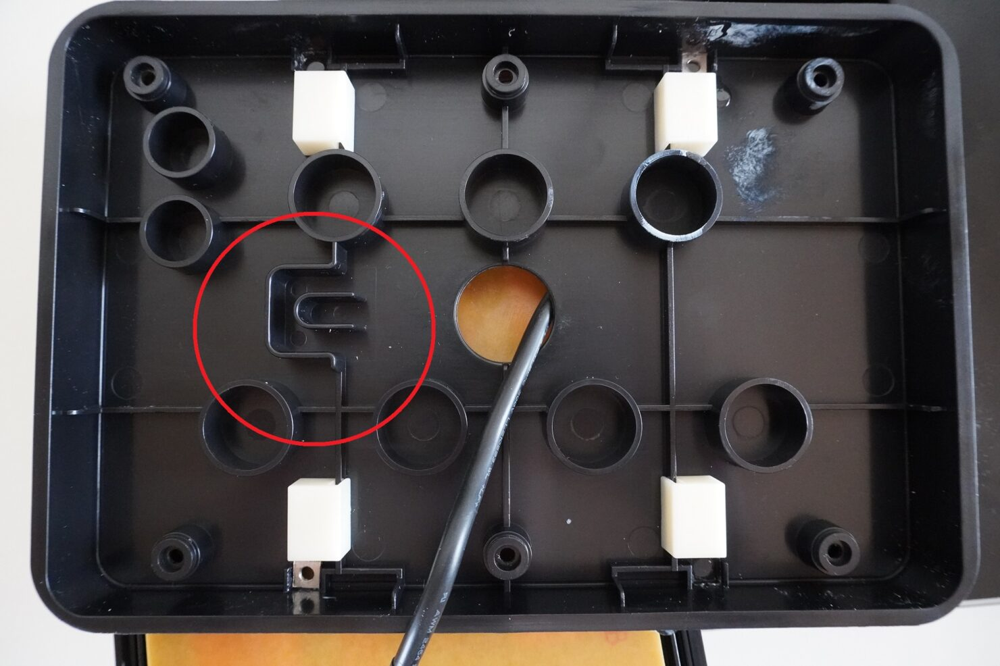
正因为如此，扣回键盘模块后盖时会非常费劲。如果硬压着强行合盖，很容易把螺丝孔拧滑丝，或者压伤内部线缆。
如果觉得后盖实在不好合上，把后盖上下颠倒过来扣上去也是可以的。上下倒置之后，线缆会容易收纳得多，装好后实际游玩完全没有任何影响。
这次改造让我回想起了学生时代折腾 PS2 专控的日子，不过由于用上了梅花螺丝，线缆又无法拔掉，改造门槛比想象中要高一些。再加上橡胶片和厚纸板的层数都跟 PS2 版不一样，我装了又拆、拆了又装，前前后后折腾了三遍。希望看完这篇文章的各位，能一次就搞定。
在 INFINITAS 中无反应时的排查步骤
如果入门款在 INFINITAS 中没有反应，请按以下顺序逐一检查：
- 是否通过 USB 连接：在 PC 上只能使用 USB 有线连接，蓝牙模式仅限手机版使用
- 是否直接插在电脑本体接口上：如果经过了 USB 集线器（Hub），请改插到电脑本体的 USB 接口上
- 是否在启动 INFINITAS 之前就已经连接好：先插好控制器再重新启动游戏
- 按键分配设置：打开启动器设置中的手柄（Gamepad）选项卡，确认键盘按键与转盘的键位分配
- Windows 系统是否已识别：在 Windows 的“游戏控制器”设置界面中确认按下按键时是否有响应
关于 INFINITAS 的入坑步骤及所需配置，整理在这篇文章中。
购买二手时的注意事项
2022 年前后这款手台一度长期缺货，但现在在官方商城已经可以正常买到。完全没有必要去闲置交易平台高价购买超过原价的二手货。
如果确实打算入手二手，务必确认全部键盘按键与转盘是否都能正常触发、卡键是否严重，以及是否附带 USB 数据线。另外也要留意，有些二手件可能已经被前任机主拆机改造过了。
关于入门款的常见问题
入门款的卡键问题不改造就修不好吗？
如果刻意注意尽量按按键正中央，卡键频率可以在一定程度上减少。但归根结底这是按键本身的结构设计导致的，想要彻底解决，还是建议用橡胶片和厚纸板进行垫高改造。
橡胶片应该叠几层？
入门款只需贴 1 层 1mm 厚的橡胶片就足够了。虽然 PS2 版专控需要贴 2 层（2mm），但入门款的按键支脚长了约 1mm，贴 2 层反而会按不下去。
入门款能在 PS2 上使用吗？
不能。它是专供 PC 端 INFINITAS（USB 连接）与手机端 ULTIMATE MOBILE（蓝牙连接）使用的控制器。
入门款和 Phoenixwan 选哪个更好？
如果想低成本且安静地先入坑，选入门款；如果想以接近街机的手感练习，选 Phoenixwan（PHOENIXWAN 系列）。不过 Phoenixwan 体积较大、按键敲击声也比较响，购买前需要把摆放空间和静音改造一并考虑进去。
总结
入门款是同时兼容 INFINITAS 与手机版、价格最亲民的 KONAMI 官方专控。它的优点是安静轻便，但容易卡键是绕不开的短板。
卡键问题可以通过 1mm 橡胶片加厚纸板垫高来有效修复。由于拆装过程稍微有点麻烦，建议先仔细阅读上文的组装注意事项，再在自担风险的前提下动手尝试。
💬 读者评论与作者答疑（3 组对话）